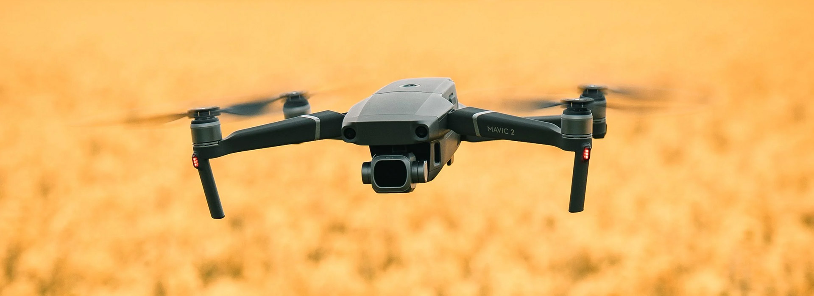

FAQ's
Drones have captured the imagination of people worldwide, leading to a multitude of questions and discussions surrounding their capabilities and impact. Some common inquiries include inquiries about drone regulations, their potential applications in various industries, their range and flight capabilities, and their safety features. Additionally, people often seek information about the cost and accessibility of drones, as well as the necessary skills and certifications for operating them. The curiosity surrounding drones reflects the growing interest in this innovative technology and the desire to understand its potential and limitations.
What are drones?
Drones are unmanned aerial vehicles (UAVs) that can fly autonomously or be controlled remotely by a pilot.
How do drones fly?
Drones fly by generating lift with their propellers or wings, similar to how airplanes or helicopters operate.
What are the different types of drones?
There are various types of drones, including quadcopters (four-rotor drones), fixed-wing drones, hybrid drones, and more.
What are some common applications of drones?
Drones have numerous applications, such as aerial photography, videography, surveillance and security, delivery services, agriculture, search and rescue operations, and even recreational use.
Are there any regulations or restrictions for flying drones?
Yes, there are regulations in place for flying drones, such as registering your drone with the appropriate authorities, respecting no-fly zones, and adhering to altitude and distance restrictions.
How far can drones fly and how long can they stay in the air?
The range and flight time of drones vary depending on the model. Consumer-grade drones typically have a range of a few hundred meters to a few kilometers and can stay in the air for around 20-30 minutes, while professional drones may have longer ranges and flight times.
Can drones be used for aerial photography and videography?
Absolutely! Drones are widely used for aerial photography and videography, providing stunning perspectives and capturing footage that was previously difficult or impossible to obtain.
What safety features do drones have to prevent accidents?
Drones are equipped with safety features like GPS navigation, obstacle avoidance sensors, and return-to-home functions to prevent collisions and ensure safe flights.
Are drones expensive to buy and maintain?
The cost of drones can vary significantly based on their features, capabilities, and brand. Entry-level consumer drones can be relatively affordable, while professional-grade drones can be more expensive. Maintenance costs depend on usage and any repairs or replacements needed over time.
What skills or certifications do I need to fly a drone legally?
The requirements for flying a drone legally can vary by country and jurisdiction. In many cases, you may need to obtain a remote pilot license or certification, undergo training, and follow specific guidelines set by the aviation authority in your region. It's important to familiarize yourself with the local regulations before flying a drone.
You can send us mail: test@drone.com